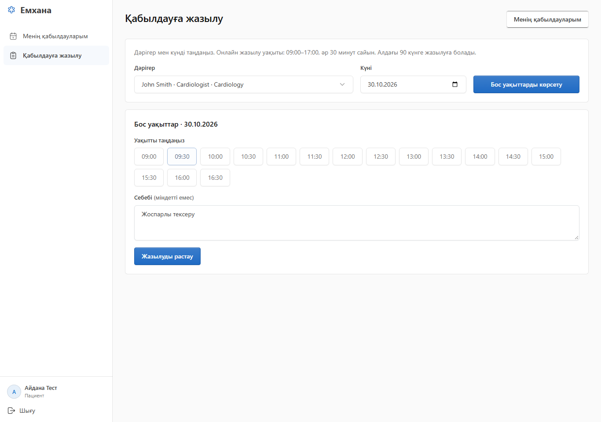
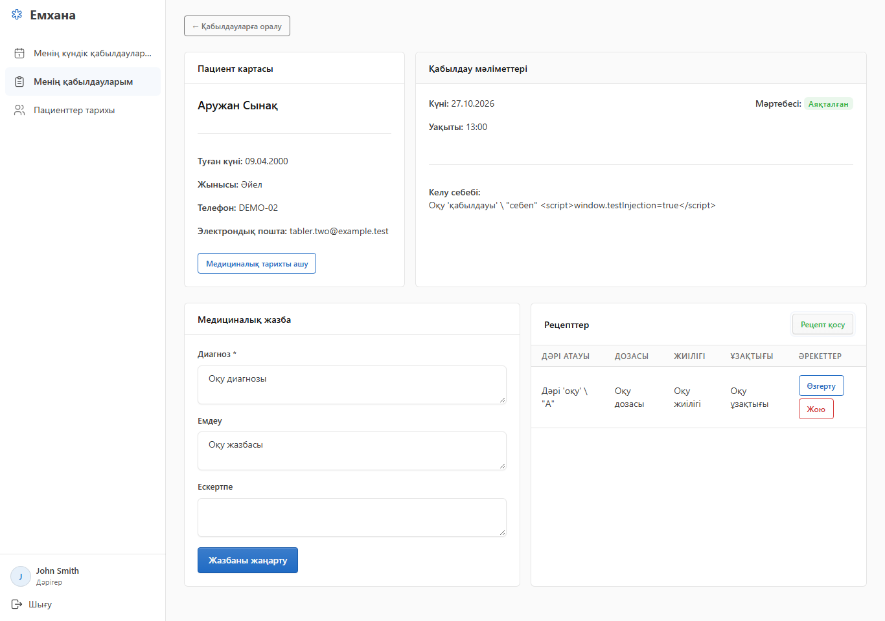

4 рөл
Пациент · тіркеуші · дәрігер · әкімші
Пациенттің жазылуынан қабылдаудың нәтижесіне дейін
Пациент · тіркеуші · дәрігер · әкімші
Өзара байланысқан деректер
12 минут баяндама және көрсетілім + 3 минут сұрақ
Оқу жобасы · PHP + MySQL/MariaDB · Қазақша интерфейс
Өзі тіркеледі, бос уақытқа жазылады, өз қабылдауларын көреді.
Пациент карточкаларын жүргізеді, қабылдауға жазады және жазбаны басқарады.
Өз қабылдаулары, медициналық жазба, рецепт және пациент тарихы.
Аккаунттар, дәрігерлер, бөлімшелер, есептер және бар карточкаға аккаунт байланыстыру.
Аккаунт пен пациент карточкасының жеке байланысы.
Бөлімше мен мамандық анықтамалықтары.
Медициналық жазбаға бірнеше рецепт берілуі мүмкін. Пациент карточкасы аккаунтсыз да болады.
doctor_id appointment_date appointment_time occupied_slot
Scheduled / Completed → 1
Cancelled → NULL
FOR UPDATE қабылдауды қатар аяқтау мен болдырмауды реттейді.


Әр қорғалған сұрауда аккаунттың белсенділігі мен рөлі тексеріледі.
Пациент карточкасы сессиядан анықталады; бөтен қабылдауды болдырмайды.
POST формаларында CSRF; HTML шығару кезінде экрандау; SQL мәндері PDO параметрлерімен.
password_hash арқылы сақталады, password_verify арқылы тексеріледі.
27.10.2026 нәтижелері · бөлек тест базасы
Рөлдер, қақтығыс, иелік, мобильді мәзір және пернетақта.
Жазылу → қабылдау → медициналық нәтиже → есеп
Өздігінен жазылу және жеке қабылдаулар тізімі.
Тіркеуші мен дәрігердің байланысқан жұмыс барысы.
Кілттер, бірегей уақыт және транзакциялар.
github.com/Wanmiller/Hospital_proj
Сұрақтарға дайынбыз. SQL мен кодқа арналған мысалдар guide.docx ішінде.